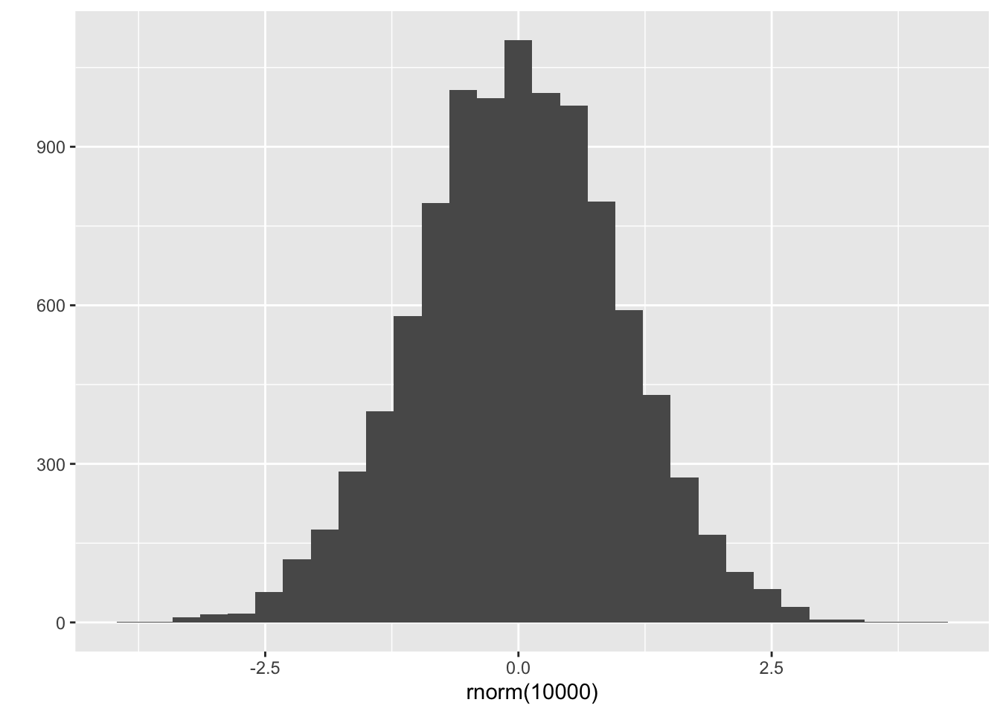
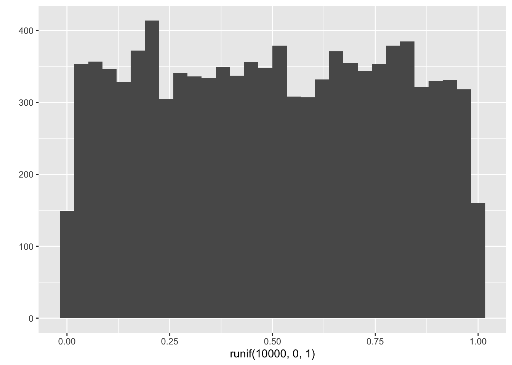

Chapter 5 Base R
5.1 Topics
- R Objects and Variables
- Data Structure
- Sub-Setting
- Functions
- Control Flow (if, for, while)
5.2 Further reading
- Wickham, H. (2014). Advanced R. Chapman and Hall/CRC
- http://adv-r.had.co.nz
- This is a nice book to read after you become comfortable in base R (not required in this course)
5.3 Interaction with R
- R Console: for easy interactive exploration of ideas
- R Script file (.R): for sequence of R commands
- R markdown (.Rmd): for reproducible and dynamic reports
5.4 R Objects and Variables
- Everything in R is stored as an object, which is associated with a variable name.
- An object is a technical terminology defined in Object Oriented Programming (OOP). (OOP is an important concept but not in this class)
- A variable name can be assigned to an object using the assignment operator.
## [1] 0.2## [1] 1 4 9## [1] 27.5- We can think of the assignment operation as “evaluate whatever is given on the right side of the operator, and assign (store) the result (an object of some type) of this evaluation in the variable whose name is given on the left side
5.5 Data Structure
- R has base data structures.
- Almost all other objects are built upon base data structures.
- R base data structures can be organized by their dimensionality:
| Dimension | Homogeneous | Heterogeneous |
|---|---|---|
| 1D | Atomic vector | List |
| 2D | Matrix | Data frame |
| nD | Array |
5.6 Vectors Come in Two Flavours
- Atomic vectors (homogeneous)
- All elements of an atomic vector must be the same type.
- There are 6 types of an atomic vector
- Logical (TRUE or FALSE), integer, double, and character (+ rarely used complex and raw)
- Atomic vectors are usually created with
c(), short for combine:a <- c(TRUE, FALSE, T, F)# logicala <- c(1L, 6L, 5L)# integera <- c(1, 2.5, 3.8)# doublea <- c("apple", "orange")# character
- Lists (heterogeneous)
- Lists are different from atomic vectors because their elements can be of any type.
- List are created by
list() > x <- list(1:3, "a", c(TRUE, FALSE))
5.7 A Vector Has Three Properties
- Type:
typeof()returns the type of an object.
## [1] "double"- Length:
length()returns the number of elements in a vector
## [1] 3- Attributes:
attributes()returns additional arbitrary metadata
## NULL5.8 Attributes
- All objects can have attributes to store metadata about the object.
- Attributes can be considered as a named list.
- Attributes can be accessed individually with
attr()or all at once withattributes(). - Names are attributes of a vector. You can name a vector in two ways:
## [1] "x" "y" "z"## l m n
## 1 2 3## $names
## [1] "l" "m" "n"## $names
## [1] "mpg" "cyl" "disp" "hp" "drat" "wt" "qsec" "vs" "am" "gear"
## [11] "carb"
##
## $row.names
## [1] "Mazda RX4" "Mazda RX4 Wag" "Datsun 710"
## [4] "Hornet 4 Drive" "Hornet Sportabout" "Valiant"
## [7] "Duster 360" "Merc 240D" "Merc 230"
## [10] "Merc 280" "Merc 280C" "Merc 450SE"
## [13] "Merc 450SL" "Merc 450SLC" "Cadillac Fleetwood"
## [16] "Lincoln Continental" "Chrysler Imperial" "Fiat 128"
## [19] "Honda Civic" "Toyota Corolla" "Toyota Corona"
## [22] "Dodge Challenger" "AMC Javelin" "Camaro Z28"
## [25] "Pontiac Firebird" "Fiat X1-9" "Porsche 914-2"
## [28] "Lotus Europa" "Ford Pantera L" "Ferrari Dino"
## [31] "Maserati Bora" "Volvo 142E"
##
## $class
## [1] "data.frame"5.9 Type Coercion (Conversion)
- All elements of a vector must belong to the same base data type. If that is not true, R will automatically force it by type coercion.
## [1] "4" "7" "23.5" "76.2" "80" "rrt"## [1] "character"- Functions can automatically convert data type.
## [1] 2- You can explicitly convert data type with
as.character(),as.double(),as.integer(), andas.logical().
## [1] 1 2 3## [1] "1" "2" "3"5.10 NA represents missing
## [1] 4 6 NA 2## [1] TRUE FALSE FALSE NA TRUE5.11 Useful Functions for a vector
5.11.1 Generate a vector
## [1] 1 2 3 4 5## [1] 1 2 3 4 5 6## [1] 1 2 3 4 5 6 7 8 9 10## [1] 1 2 3 4 5 6 7 8 9 10## [1] 1 3 5 7 9# rep(x, times) replicates the values in x multiple times
# x can be a number or vector
# replicates 1 5 times
rep(1, 5)## [1] 1 1 1 1 1## [1] 1 2 1 2 1 2 1 2 1 2## [1] 1 1 1 1 1 2 2 2 2 2# rnorm(n, mean = 0, sd = 1) generates a vector of n random samples
# from a normal distribution with specific mean and sd.
rnorm(100)## [1] -1.50064289 -0.09232959 1.51099445 0.30771100 -2.11872899
## [6] -0.05685353 0.22309149 0.30422586 0.21779854 -0.06307553
## [11] 0.56882567 -1.27383000 0.65382400 0.15746376 -0.95173637
## [16] 1.25437218 -0.82893253 -0.24055288 -0.52348289 0.43142608
## [21] -0.29066305 -1.08937099 -1.63957156 -1.15067507 -0.73545067
## [26] -0.29453143 1.31037036 -0.78065229 0.17939720 -0.10468728
## [31] 0.92749209 -1.82662432 -0.66500763 -0.22532103 -0.41288537
## [36] -1.14619516 -1.88670771 0.82241267 -0.54732119 0.43038359
## [41] 0.37592490 -0.19037314 -0.14435660 0.47530037 -0.44332282
## [46] 1.49063643 -0.31107515 0.33437520 -0.74257018 0.73820044
## [51] 2.21907859 -0.38155419 0.42722707 -0.41056292 -0.42869752
## [56] 0.59940149 0.22416178 0.49632796 -1.18042672 0.33535533
## [61] -0.23078888 -0.17379086 1.76907221 0.12846795 -0.56794428
## [66] 0.42175278 -0.04368964 -0.18414430 -0.47615853 1.28149868
## [71] -1.14456766 1.46138269 -0.71340480 -1.09779688 -0.66766269
## [76] 0.60637631 -0.20806145 -1.45006030 0.31735634 -0.61015000
## [81] 0.74043753 0.84555448 0.82591923 1.00859929 -0.54001287
## [86] 0.03098207 -0.28437267 1.17788529 -0.27761821 0.95472443
## [91] 0.24571510 0.20817059 -2.00108190 -0.71360374 0.72633346
## [96] 0.17714022 -1.52187767 0.12955661 -0.42512501 1.60120381## `stat_bin()` using `bins = 30`. Pick better value with `binwidth`.
# runif(n, min, max) generates a vector of n random samples
# from a uniform distribution whose limits are min and max.
runif(100, 0, 1)## [1] 0.943861250 0.056311908 0.633182602 0.710232072 0.825482420
## [6] 0.613926861 0.892977876 0.362883682 0.252323278 0.154669180
## [11] 0.935391706 0.779894701 0.949384364 0.842298174 0.006477969
## [16] 0.512337480 0.816121064 0.245569136 0.317458130 0.143820596
## [21] 0.713143229 0.455837973 0.090807271 0.427967532 0.270272379
## [26] 0.180963991 0.636886485 0.869165608 0.796816674 0.207053073
## [31] 0.435920799 0.385779594 0.810495143 0.999571885 0.816710621
## [36] 0.347581698 0.977308467 0.971030333 0.044824908 0.515177422
## [41] 0.234326150 0.028252058 0.415710200 0.781344965 0.760601581
## [46] 0.716445617 0.187679717 0.263395456 0.618253534 0.483415370
## [51] 0.394245577 0.175613471 0.489124339 0.407617667 0.588132814
## [56] 0.924699242 0.872080879 0.521349988 0.899478856 0.077489302
## [61] 0.214530362 0.303936806 0.238274281 0.138821038 0.951167596
## [66] 0.634681566 0.951008948 0.590403458 0.704886384 0.026499815
## [71] 0.945091792 0.615273389 0.954513302 0.334425333 0.490162405
## [76] 0.494714282 0.111688823 0.341452840 0.954537064 0.353035126
## [81] 0.586598723 0.201051355 0.691329050 0.620701057 0.362276409
## [86] 0.485252253 0.350977099 0.580565370 0.141097489 0.503133415
## [91] 0.747081937 0.725385464 0.765119377 0.766300231 0.163137351
## [96] 0.673589961 0.993566201 0.684381658 0.209214546 0.514808541## `stat_bin()` using `bins = 30`. Pick better value with `binwidth`.
5.11.2 Indexing or subsetting a Vector
You can access a particular element of a vector through an index between square brackets or indexing (subsetting) operator.
Positive integers return elements at the specified positions.
## [1] 4 2- Negative integers omit elements at the specified positions:
## [1] 3 5 6 7- Logical vectors select elements where the corresponding logical value is TRUE. This logical indexing is very useful because we can subset a vector or dataframe based on conditions.
## [1] 2 3 6 7## [1] FALSE FALSE TRUE TRUE TRUE TRUE# This is called a logical indexing, which is a very powerful tool.
# > : greater than (Logical Operators)
x[x > 3] ## [1] 4 5 6 7## [1] 4# %in% operator
# v1 %in% v2 returns a logical vector indicating
# whether the elements of v1 are included in v2.
c(1,2,3) %in% c(2,3,4,5,6)## [1] FALSE TRUE TRUE## [1] 1 2 3 4 5## [1] 1 2 100 4 5## [1] 100 2 100 4 100## [1] 1 2 3 NA 5 6 NA## [1] FALSE FALSE FALSE TRUE FALSE FALSE TRUE# Type conversion: TRUE and FALSE will be converted into 1 and 0, respectively.
# This expression answers the question: How many NSs are in a?
sum(is.na(a))## [1] 2## [1] TRUE TRUE TRUE FALSE TRUE TRUE FALSE## [1] 5## [1] 1 2 3 999 5 6 999## x y z
## 1 2 3## x z
## 1 3# R uses a "recycling rule" by repeating the shorter vector
# In this example, R recycled c(TRUE, FALSE) to produce c(TRUE, FALSE, TRUE, FALSE)
i <- c(TRUE, FALSE)
a <- c(1,2,3,4)
a[i]## [1] 1 3## [1] 14 15 16 175.11.3 Arrange a vector
## [1] 4 5 6## [1] 6 5 4## [1] 4 6 5## [1] 2 3 1# order() returns a permutation which rearranges
# its first argument into ascending or descending order.
# What this means is order(c(5,6,4))
# 1) first sorts a vector in ascending order to produce c(4,5,6)
# 2) and returns the indices of the sorted element in the original vector.
# e.g., we have 3 first b/c the index of 4 in the original vector is 3
# e.g., we have 1 first b/c the index of 5 in the original vector is 1
# e.g., we have 2 first b/c the index of 6 in the original vector is 2
order(c(5,6,4))## [1] 3 1 2## [1] 4 5 6## mpg cyl disp hp drat wt qsec vs am gear carb
## Cadillac Fleetwood 10.4 8 472 205 2.93 5.250 17.98 0 0 3 4
## Lincoln Continental 10.4 8 460 215 3.00 5.424 17.82 0 0 3 4
## Camaro Z28 13.3 8 350 245 3.73 3.840 15.41 0 0 3 4
## Duster 360 14.3 8 360 245 3.21 3.570 15.84 0 0 3 4
## Chrysler Imperial 14.7 8 440 230 3.23 5.345 17.42 0 0 3 4
## Maserati Bora 15.0 8 301 335 3.54 3.570 14.60 0 1 5 85.11.4 Vectorization of Functions
- One of the most powerful aspects of R is the vectorization of functions.
- Many R functions can be applied to a vector of values producing an equal-sized vector of results.
## [1] 1 2 5## [1] 1 4 9## [1] 14 7 7 9## [1] 14 7 16 9## [1] -1.5 -0.5 0.5 1.55.11.5 Some more functions
## a
## 1 2 3 4
## 2 3 3 5## [1] 1 2 3 4## [1] NA## [1] 2.755.12 Exercise on vectors
mtcars is a dataframe about fuel economy of various cars. In the dataset, mpg represents miles per gallon. mtcars$mpg allows us to access the mpg variable in the mtcars dataframe.
- Calculate the length of the vector
a.
## [1] 32- Calculate the mean of
ausingsum()andlength()functions.
## [1] 20.09062- Calculate the mean of
ausingmean()function.
## [1] 20.09062- Calculate the variance of
ausingsd()function.
## [1] 36.3241- Calculate the variance of
ausingvar()function.
## [1] 36.3241- Calculate the variance of
aby directly calculating the following expression: \([(a_1 - \bar{a})^2 + (a_2 - \bar{a})^2 + ... (a_n - \bar{a})^2]/(n-1) = \frac{\sum_{i=1}^{n}(a_i-\bar{a})^2}{n-1}\), where \(a = (a_1, a_2, ... , a_n)\) and \(\bar{a} = mean(a)\)
## [1] 36.3241- Standardize the vector
a, i.e., \(z = \frac{a-\bar{a}}{sd(a)}\).
## [1] 0.15088482 0.15088482 0.44954345 0.21725341 -0.23073453
## [6] -0.33028740 -0.96078893 0.71501778 0.44954345 -0.14777380
## [11] -0.38006384 -0.61235388 -0.46302456 -0.81145962 -1.60788262
## [16] -1.60788262 -0.89442035 2.04238943 1.71054652 2.29127162
## [21] 0.23384555 -0.76168319 -0.81145962 -1.12671039 -0.14777380
## [26] 1.19619000 0.98049211 1.71054652 -0.71190675 -0.06481307
## [31] -0.84464392 0.21725341- Use
scale()function to standardizeaand compare the results with your manual calculation.
## [,1]
## [1,] 0.15088482
## [2,] 0.15088482
## [3,] 0.44954345
## [4,] 0.21725341
## [5,] -0.23073453
## [6,] -0.33028740
## [7,] -0.96078893
## [8,] 0.71501778
## [9,] 0.44954345
## [10,] -0.14777380
## [11,] -0.38006384
## [12,] -0.61235388
## [13,] -0.46302456
## [14,] -0.81145962
## [15,] -1.60788262
## [16,] -1.60788262
## [17,] -0.89442035
## [18,] 2.04238943
## [19,] 1.71054652
## [20,] 2.29127162
## [21,] 0.23384555
## [22,] -0.76168319
## [23,] -0.81145962
## [24,] -1.12671039
## [25,] -0.14777380
## [26,] 1.19619000
## [27,] 0.98049211
## [28,] 1.71054652
## [29,] -0.71190675
## [30,] -0.06481307
## [31,] -0.84464392
## [32,] 0.21725341
## attr(,"scaled:center")
## [1] 20.09062
## attr(,"scaled:scale")
## [1] 6.026948- Calculate the difference between the largest and smallest numbers in
a.
## [1] 23.5## [1] 23.5- Normalize the vector
a, i.e., \(n = \frac{(x-min(x))}{(max(x)-min(x))}\).
## [1] 0.4510638 0.4510638 0.5276596 0.4680851 0.3531915 0.3276596 0.1659574
## [8] 0.5957447 0.5276596 0.3744681 0.3148936 0.2553191 0.2936170 0.2042553
## [15] 0.0000000 0.0000000 0.1829787 0.9361702 0.8510638 1.0000000 0.4723404
## [22] 0.2170213 0.2042553 0.1234043 0.3744681 0.7191489 0.6638298 0.8510638
## [29] 0.2297872 0.3957447 0.1957447 0.4680851- Plot the histogram of
ausingqplot().
## `stat_bin()` using `bins = 30`. Pick better value with `binwidth`.## `stat_bin()` using `bins = 30`. Pick better value with `binwidth`.- How many elements in
aare larger than 20? (uselength())
## [1] TRUE TRUE TRUE TRUE FALSE FALSE FALSE TRUE TRUE FALSE FALSE
## [12] FALSE FALSE FALSE FALSE FALSE FALSE TRUE TRUE TRUE TRUE FALSE
## [23] FALSE FALSE FALSE TRUE TRUE TRUE FALSE FALSE FALSE TRUE# This is a logical indexing where the logical vector
# within the subsetting operator (i.e., []) will create a vector with elements larger than 20.
a[a>20]## [1] 21.0 21.0 22.8 21.4 24.4 22.8 32.4 30.4 33.9 21.5 27.3 26.0 30.4 21.4## [1] 14- How many elements in
aare larger than 20? (usesum())
## [1] 14txhousing is a tibble in ggplot2 containing information about the housing market in Texas provided by the TAMU real estate center. In the dataset, median represents median sale price. txhousing$median allows us to access the median variable in the txhousing tibble (or dataframe).
Calculate the length of the vector
b.how many missing values (or NAs) are in
b?Calculate the mean of
busingsum()andlength()functions.Calculate the mean of
busingmean()function.Are the two means same? If not, Why? How do we get the same result?
Calculate the variance of
busingsd()function.Calculate the variance of
busingvar()function.Plot the histogram of
busingqplot().Create a new vector
cby removing all missing fromb.(Using
c) What percentage of houses has median sale price larger than $200000?
5.13 Factors
5.13.1 What is a factor?
- Factors are used to represent categorical data (e.g., gender, states).
- Factors are stored as a vector of integer values associated with a set of character values (
levels) to use when the factor is displayed. - Factor have two attributes
- the
class(), “factor”, which make factors behave differently from regular integer vectors, and - the
levels(), which defines the set of allowed values.
- the
5.13.2 Creating a factor
- The function
factor()is used to encode a numeric or character vector as a factor.
## [1] 2 1 1 3 2 1 1
## Levels: 1 2 3- Factors are built on top of integers, and have a levels attribute
## [1] "integer"## $levels
## [1] "1" "2" "3"
##
## $class
## [1] "factor"levels()displays the levels of a factor
## [1] "1" "2" "3"- The factor’s level is a character vector.
## [1] TRUE- More test functions in R
- We can change levels
## [1] two one one three two one one
## Levels: one two three- By default, the level of a factor will be displayed in alphabetical order.
## [1] Dec Apr Jan Mar
## Levels: Apr Dec Jan Mar## [1] Apr Dec Jan Mar
## Levels: Apr Dec Jan Marlevelsoption can be used to change the order in which the levels will be displayed from their default sorted order
month_levels <- c(
"Jan", "Feb", "Mar", "Apr", "May", "Jun",
"Jul", "Aug", "Sep", "Oct", "Nov", "Dec"
)
f3 <- factor(c("Dec", "Apr", "Jan", "Mar"), levels = month_levels)
f3## [1] Dec Apr Jan Mar
## Levels: Jan Feb Mar Apr May Jun Jul Aug Sep Oct Nov Dec## [1] Jan Mar Apr Dec
## Levels: Jan Feb Mar Apr May Jun Jul Aug Sep Oct Nov Dec## f3
## Jan Feb Mar Apr May Jun Jul Aug Sep Oct Nov Dec
## 1 0 1 1 0 0 0 0 0 0 0 1## f2
## Apr Dec Jan Mar
## 1 1 1 15.13.3 unordered vs ordered factor
- Although the levels of a factor created by the
factor()function has an order for displaying, the factor created by thefactor()is called an unordered factor in the sense that the factor does not have any meaningful ordering structure. Comparison operators will not work with the unordered factor. Sometimes, we want to specify the meaningful order of a factor by creating an ordered factor.
# the default level is in alphabetical order
f4 <- factor(c("high", "low", "medium", "medium", "high"))
f4## [1] high low medium medium high
## Levels: high low medium## [1] high high low medium medium
## Levels: high low medium## [1] high low medium medium high
## Levels: low medium high## [1] low medium medium high high
## Levels: low medium highmin(f5)andf[1] < f[3]will produce error.With
ordered = TRUEoption, the levels should be regarded as ordered.
f6 <- factor(c("high", "low", "medium", "medium", "high"), levels = c("low", "medium", "high"), ordered = TRUE)
f6## [1] high low medium medium high
## Levels: low < medium < high## [1] low
## Levels: low < medium < high## [1] TRUEordered()function also creates an ordered factor.
## [1] high low medium medium high
## Levels: low < medium < high5.13.4 Why factors?
- Factors are an efficient way to store character values, because each unique character value is stored only once, and the factor itself is stored as an integer vector.
- Factors prevent typo because they only allow us to input the pre-defined values.
- Factors allow us to encode ordering structure.
5.13.5 Some more comments
- Be careful. Many base R functions automatically convert character vectors into factors. To suppress this default behavior, use
stringsAsFactors = FALSEoption within a function. You can explicitly convert data type withas.character(),as.double(),as.integer(), andas.logical().
5.13.6 Exercise
- You have the following responses of a five-point likert scale survey item:
x <- c("Agree", "Disagree", "Neutral", "Agree" ,"Agree", "Strongly disagree", "Neutral"). Create an ordered factor for the five point likert scale responses (Notice that you don’t have “Strongly agree†inx, but include “Strongly agree†in your factor level).
# you may want to this
factor(x, levels = c("Strongly disagree", "Disagree", "Neutral", "Agree", "Strongly agree"))## [1] Agree Disagree Neutral Agree
## [5] Agree Strongly disagree Neutral
## Levels: Strongly disagree Disagree Neutral Agree Strongly agree## [1] Agree Disagree Neutral Agree
## [5] Agree Strongly disagree Neutral
## Levels: Agree Disagree Neutral Strongly disagree- Using the following character vector
x = c("male", "male", "female", "male", "female"), create a factor with levels reversed from its default levels order.
## [1] male male female male female
## Levels: female male# What I've asked you is to change the default alphabetical order using levels options.
factor(x, levels = c("male", "female"))## [1] male male female male female
## Levels: male female- Run the following code and explain what the code is doing.
# I just wanted to introduce 'cut()` function
set.seed(7)
x <- rnorm(100)
cut(x, breaks = quantile(x))## [1] (0.72,2.72] (-1.79,-0.559] (-1.79,-0.559] (-0.559,0.106]
## [5] (-1.79,-0.559] (-1.79,-0.559] (0.72,2.72] (-0.559,0.106]
## [9] (0.106,0.72] (0.72,2.72] (0.106,0.72] (0.72,2.72]
## [13] (0.72,2.72] (0.106,0.72] (0.72,2.72] (0.106,0.72]
## [17] (-1.79,-0.559] (-0.559,0.106] (-0.559,0.106] (0.72,2.72]
## [21] (0.72,2.72] (0.106,0.72] (0.72,2.72] (-1.79,-0.559]
## [25] (0.72,2.72] (0.106,0.72] (0.72,2.72] (0.106,0.72]
## [29] (-1.79,-0.559] (-0.559,0.106] (-1.79,-0.559] (0.106,0.72]
## [33] (0.106,0.72] (-0.559,0.106] (-0.559,0.106] (-1.79,-0.559]
## [37] (0.72,2.72] (-1.79,-0.559] (-0.559,0.106] (0.106,0.72]
## [41] (0.72,2.72] (-1.79,-0.559] (-0.559,0.106] (-1.79,-0.559]
## [45] (-0.559,0.106] (-0.559,0.106] (0.72,2.72] (0.106,0.72]
## [49] (-0.559,0.106] (0.72,2.72] (-0.559,0.106] (-0.559,0.106]
## [53] (0.106,0.72] (0.72,2.72] (0.72,2.72] (0.106,0.72]
## [57] (-1.79,-0.559] (0.106,0.72] (0.106,0.72] (-1.79,-0.559]
## [61] (-0.559,0.106] (0.106,0.72] (0.106,0.72] (0.106,0.72]
## [65] (0.106,0.72] (0.72,2.72] (0.72,2.72] (0.72,2.72]
## [69] (0.72,2.72] (0.106,0.72] (0.106,0.72] (-1.79,-0.559]
## [73] (-1.79,-0.559] (-1.79,-0.559] (-1.79,-0.559] (-1.79,-0.559]
## [77] (-1.79,-0.559] (-0.559,0.106] (-0.559,0.106] (0.72,2.72]
## [81] (0.106,0.72] (-0.559,0.106] (-0.559,0.106] (-0.559,0.106]
## [85] (-1.79,-0.559] (-0.559,0.106] (-0.559,0.106] (-0.559,0.106]
## [89] <NA> (0.106,0.72] (0.72,2.72] (-1.79,-0.559]
## [93] (0.106,0.72] (0.106,0.72] (0.72,2.72] (-1.79,-0.559]
## [97] (0.72,2.72] (-1.79,-0.559] (-0.559,0.106] (-0.559,0.106]
## Levels: (-1.79,-0.559] (-0.559,0.106] (0.106,0.72] (0.72,2.72]5.14 Lists
5.14.1 What is a list?
- A list is a one-dimensional heterogeneous data structure.
_ Because a list is a one-dimensional data structure, we can index the element of a list using a single number.
- Unlike a vector, a list is a heterogeneous data structure, meaning that the element of a list can be any object in R.
5.14.2 Creating a list
list()is used to create a list.
## [[1]]
## [1] 1 2 3 4 5 6
##
## [[2]]
## [1] "a"
##
## [[3]]
## [1] TRUE TRUE FALSE
##
## [[4]]
## [1] 1.2 3.3 4.6 6.6## List of 4
## $ : int [1:6] 1 2 3 4 5 6
## $ : chr "a"
## $ : logi [1:3] TRUE TRUE FALSE
## $ : num [1:4] 1.2 3.3 4.6 6.6## [1] "list"5.14.3 Why lists?
- Because of its flexible structure, many R functions store their outputs as a list, and return the list.
# In R, lm() is a function that fits a regression model to data.
# In the following R expression, 'mpg' is a dependent variable
# and `disp` and `cyl` are independent variable.
fit <- lm(mpg ~ disp + cyl, data = mtcars)
fit##
## Call:
## lm(formula = mpg ~ disp + cyl, data = mtcars)
##
## Coefficients:
## (Intercept) disp cyl
## 34.66099 -0.02058 -1.58728## [1] "list"## List of 12
## $ coefficients : Named num [1:3] 34.661 -0.0206 -1.5873
## ..- attr(*, "names")= chr [1:3] "(Intercept)" "disp" "cyl"
## $ residuals : Named num [1:32] -0.844 -0.844 -3.289 1.573 4.147 ...
## ..- attr(*, "names")= chr [1:32] "Mazda RX4" "Mazda RX4 Wag" "Datsun 710" "Hornet 4 Drive" ...
## $ effects : Named num [1:32] -113.65 -28.44 -6.81 2.04 4.06 ...
## ..- attr(*, "names")= chr [1:32] "(Intercept)" "disp" "cyl" "" ...
## $ rank : int 3
## $ fitted.values: Named num [1:32] 21.8 21.8 26.1 19.8 14.6 ...
## ..- attr(*, "names")= chr [1:32] "Mazda RX4" "Mazda RX4 Wag" "Datsun 710" "Hornet 4 Drive" ...
## $ assign : int [1:3] 0 1 2
## $ qr :List of 5
## ..$ qr : num [1:32, 1:3] -5.657 0.177 0.177 0.177 0.177 ...
## .. ..- attr(*, "dimnames")=List of 2
## .. .. ..$ : chr [1:32] "Mazda RX4" "Mazda RX4 Wag" "Datsun 710" "Hornet 4 Drive" ...
## .. .. ..$ : chr [1:3] "(Intercept)" "disp" "cyl"
## .. ..- attr(*, "assign")= int [1:3] 0 1 2
## ..$ qraux: num [1:3] 1.18 1.09 1.19
## ..$ pivot: int [1:3] 1 2 3
## ..$ tol : num 1e-07
## ..$ rank : int 3
## ..- attr(*, "class")= chr "qr"
## $ df.residual : int 29
## $ xlevels : Named list()
## $ call : language lm(formula = mpg ~ disp + cyl, data = mtcars)
## $ terms :Classes 'terms', 'formula' language mpg ~ disp + cyl
## .. ..- attr(*, "variables")= language list(mpg, disp, cyl)
## .. ..- attr(*, "factors")= int [1:3, 1:2] 0 1 0 0 0 1
## .. .. ..- attr(*, "dimnames")=List of 2
## .. .. .. ..$ : chr [1:3] "mpg" "disp" "cyl"
## .. .. .. ..$ : chr [1:2] "disp" "cyl"
## .. ..- attr(*, "term.labels")= chr [1:2] "disp" "cyl"
## .. ..- attr(*, "order")= int [1:2] 1 1
## .. ..- attr(*, "intercept")= int 1
## .. ..- attr(*, "response")= int 1
## .. ..- attr(*, ".Environment")=<environment: R_GlobalEnv>
## .. ..- attr(*, "predvars")= language list(mpg, disp, cyl)
## .. ..- attr(*, "dataClasses")= Named chr [1:3] "numeric" "numeric" "numeric"
## .. .. ..- attr(*, "names")= chr [1:3] "mpg" "disp" "cyl"
## $ model :'data.frame': 32 obs. of 3 variables:
## ..$ mpg : num [1:32] 21 21 22.8 21.4 18.7 18.1 14.3 24.4 22.8 19.2 ...
## ..$ disp: num [1:32] 160 160 108 258 360 ...
## ..$ cyl : num [1:32] 6 6 4 6 8 6 8 4 4 6 ...
## ..- attr(*, "terms")=Classes 'terms', 'formula' language mpg ~ disp + cyl
## .. .. ..- attr(*, "variables")= language list(mpg, disp, cyl)
## .. .. ..- attr(*, "factors")= int [1:3, 1:2] 0 1 0 0 0 1
## .. .. .. ..- attr(*, "dimnames")=List of 2
## .. .. .. .. ..$ : chr [1:3] "mpg" "disp" "cyl"
## .. .. .. .. ..$ : chr [1:2] "disp" "cyl"
## .. .. ..- attr(*, "term.labels")= chr [1:2] "disp" "cyl"
## .. .. ..- attr(*, "order")= int [1:2] 1 1
## .. .. ..- attr(*, "intercept")= int 1
## .. .. ..- attr(*, "response")= int 1
## .. .. ..- attr(*, ".Environment")=<environment: R_GlobalEnv>
## .. .. ..- attr(*, "predvars")= language list(mpg, disp, cyl)
## .. .. ..- attr(*, "dataClasses")= Named chr [1:3] "numeric" "numeric" "numeric"
## .. .. .. ..- attr(*, "names")= chr [1:3] "mpg" "disp" "cyl"
## - attr(*, "class")= chr "lm"5.14.4 Subsetting a List
- Subsetting a list works in the same way as subsetting an atomic vector. Using
[ ]will always return a list;[[ ]]and$let you pull out the components of the list.
## $stud.id
## [1] 34453
##
## $stud.name
## [1] "John"
##
## $stud.marks
## [1] 14.3 12.0 15.0 19.0## $stud.id
## [1] 34453## [1] "list"## [1] 34453## [1] "double"# my.lst[[3]] will index the third element of a list, which is a numeric vector
# my.lst[[3]][2] will index the second element of the numeric vector
my.lst[[3]][2]## [1] 12# In the case of lists with named elements
# $ extracts the value of an individual element
my.lst$stud.id## [1] 34453## [1] "double"5.14.5 Exercise
fit is a list that contains the outputs of the lm() function for linear regression. Explore the structure of the fit object using str().
##
## Call:
## lm(formula = mpg ~ disp + cyl, data = mtcars)
##
## Coefficients:
## (Intercept) disp cyl
## 34.66099 -0.02058 -1.58728- Extract the coefficient of “Intercept†with indexing using a positive integer.
## (Intercept) disp cyl
## 34.66099474 -0.02058363 -1.58727681## (Intercept)
## 34.66099- Extract the coefficient of “Intercept†with indexing using a name.
## (Intercept)
## 34.660995.14.6 Data frames
- A data frame is a list of equal-length vectors.
## Sepal.Length Sepal.Width Petal.Length Petal.Width Species
## 1 5.1 3.5 1.4 0.2 setosa
## 2 4.9 3.0 1.4 0.2 setosa
## 3 4.7 3.2 1.3 0.2 setosa
## 4 4.6 3.1 1.5 0.2 setosa
## 5 5.0 3.6 1.4 0.2 setosa
## 6 5.4 3.9 1.7 0.4 setosa## [1] "list"## 'data.frame': 150 obs. of 5 variables:
## $ Sepal.Length: num 5.1 4.9 4.7 4.6 5 5.4 4.6 5 4.4 4.9 ...
## $ Sepal.Width : num 3.5 3 3.2 3.1 3.6 3.9 3.4 3.4 2.9 3.1 ...
## $ Petal.Length: num 1.4 1.4 1.3 1.5 1.4 1.7 1.4 1.5 1.4 1.5 ...
## $ Petal.Width : num 0.2 0.2 0.2 0.2 0.2 0.4 0.3 0.2 0.2 0.1 ...
## $ Species : Factor w/ 3 levels "setosa","versicolor",..: 1 1 1 1 1 1 1 1 1 1 ...5.14.7 The apply family of functions
- The
apply()family of functions refers toapply(),lapply(),sapply(),vapply(),mapply(),rapply(), andtapply(). - Why do we need them?
- They will make your code much shorter by replacing your own copy and paste
# A motivating example: check the number of missing values in each column of the following data frame 'm'
m <- data.frame(matrix(c(1,2,3,4,NA,6,7,NA,NA,NA,NA,NA), ncol = 4))
m## X1 X2 X3 X4
## 1 1 4 7 NA
## 2 2 NA NA NA
## 3 3 6 NA NA## [1] 0## [1] 1## [1] 2## [1] 3lapply(X, FUN)- X = a list object in R
- FUN = a function in R
lapply()- takes a function (FUN)
- applies it to each element of a list (X)
- and returns the results in the form of a list
# This one line of code will still work even when the number of columns are 1000 or more.
lapply(m, function(x) sum(is.na(x)))## $X1
## [1] 0
##
## $X2
## [1] 1
##
## $X3
## [1] 2
##
## $X4
## [1] 3# lapply() returns a list, whereas sapply() returns a vector, matrix, or array.
sapply(m, function(x) sum(is.na(x)))## X1 X2 X3 X4
## 0 1 2 35.14.8 Exercise
- How many columns in the
bfidataset have missing values more than 20?
##
## Attaching package: 'psych'## The following objects are masked from 'package:ggplot2':
##
## %+%, alpha## A1 A2 A3 A4 A5 C1 C2 C3 C4 C5 E1 E2 E3 E4 E5 N1 N2 N3 N4 N5 O1 O2 O3
## 61617 2 4 3 4 4 2 3 3 4 4 3 3 3 4 4 3 4 2 2 3 3 6 3
## 61618 2 4 5 2 5 5 4 4 3 4 1 1 6 4 3 3 3 3 5 5 4 2 4
## 61620 5 4 5 4 4 4 5 4 2 5 2 4 4 4 5 4 5 4 2 3 4 2 5
## 61621 4 4 6 5 5 4 4 3 5 5 5 3 4 4 4 2 5 2 4 1 3 3 4
## 61622 2 3 3 4 5 4 4 5 3 2 2 2 5 4 5 2 3 4 4 3 3 3 4
## 61623 6 6 5 6 5 6 6 6 1 3 2 1 6 5 6 3 5 2 2 3 4 3 5
## O4 O5 gender education age
## 61617 4 3 1 NA 16
## 61618 3 3 2 NA 18
## 61620 5 2 2 NA 17
## 61621 3 5 2 NA 17
## 61622 3 3 1 NA 17
## 61623 6 1 2 3 215.14.9 More resources
- For more details about a vector, factor, and list, see Ch20 in R for Data Science (https://r4ds.had.co.nz/vectors.html).
- For more details about the apply family of functions, see a nice introduction in Data Camp (https://www.datacamp.com/community/tutorials/r-tutorial-apply-family).
5.15 Matrices and Arrays
- matrices and arrays are implemented as vectors with special attributes
- Adding a
dim()attribute to an atomic vector allows it to behave like a multi-dimensional array.
## [1] 1 2 3 4 5 6## [,1] [,2]
## [1,] 1 4
## [2,] 2 5
## [3,] 3 6## [,1] [,2] [,3]
## [1,] 1 3 5
## [2,] 2 4 6## [,1] [,2] [,3]
## [1,] 1 3 5
## [2,] 2 4 6# a matrix can be filled by row using `byrow = TRUE`
a <- matrix(1:6, ncol=3, nrow=2, byrow = TRUE)
a## [,1] [,2] [,3]
## [1,] 1 2 3
## [2,] 4 5 6## $dim
## [1] 2 3## [1] 2 3## , , 1
##
## [,1] [,2] [,3]
## [1,] 1 3 5
## [2,] 2 4 6
##
## , , 2
##
## [,1] [,2] [,3]
## [1,] 7 9 11
## [2,] 8 10 12## [1] 2 3 2length()generalises tonrow()andncol()for matrices, anddim()for arrays.names()generalises torownames()andcolnames()for matrices, anddimnames(), a list of character vectors, for arrays.
results <- matrix(c(10, 30, 40, 50, 43, 56, 21, 30), 2, 4, byrow = TRUE)
colnames(results) <- c("1qrt", "2qrt", "3qrt", "4qrt")
rownames(results) <- c("store1", "store2")
results## 1qrt 2qrt 3qrt 4qrt
## store1 10 30 40 50
## store2 43 56 21 305.16 Data Frames
- A data frame is a list of equal-length vectors.
- A data frame is the most common way of storing data in R.
## x y
## 1 1 a
## 2 2 b
## 3 3 c## 'data.frame': 3 obs. of 2 variables:
## $ x: int 1 2 3
## $ y: Factor w/ 3 levels "a","b","c": 1 2 3data.frame()converts strings into factors by default.- This default setting can cause serious problems in some cases.
stringAsFactors = FALSEsuppresses this default setting.- Using
str()to check data types is always a good practice.
## 'data.frame': 3 obs. of 2 variables:
## $ x: int 1 2 3
## $ y: chr "a" "b" "c"5.17 Operators
- Arithmetic Operators
| Operator | Description |
|---|---|
| + | addition |
| - | subtraction |
| * | multiplication |
| / | division |
| ^ or ** | exponentiation |
- Logical Operators
| Operator | Description |
|---|---|
| < | less than |
| <= | less than or equal to |
| > | greater than |
| >= | greater than equal to |
| == | exactly equal to |
| != | not equal to |
| !x | Not x |
| x|y | x OR y |
| x&Y | x AND y |
## [1] FALSE## [1] TRUE## [1] TRUE## [1] FALSE5.18 Subsetting a Matrix and Array
- You can supply 1d index for each dimension.
## A B C
## [1,] 1 4 7
## [2,] 2 5 8
## [3,] 3 6 9## B A
## [1,] 4 1
## [2,] 6 3## B C
## 4 7## A B C
## 2 5 8## [1] 7 8 9## A B C
## [1,] 1 4 7
## [2,] 2 5 8
## [3,] 3 6 9## A B C
## [1,] FALSE TRUE TRUE
## [2,] FALSE TRUE TRUE
## [3,] FALSE TRUE TRUE## A B C
## [1,] 1 NA NA
## [2,] 2 NA NA
## [3,] 3 NA NA5.19 Exercise
mtcarsis a fuel economy dataset. Subset themtcarsdataset such that you only keepmpg,cyl, andgearvariables with 6 cylinders.Subset the
mtcarsdataset such that you only keepmpg,cyl,disp,hp,dart,wt,qsec, andamvariables with 4 or 6 cylinders.Subset the
mtcarsdataset such that you only keepmpg,cyl,disp,hp,dart,wt,qsec, andamvariables with 4 or 6 cylinders, andmpglarger than 20.
5.20 Combine Matrices by Columns or Rows
## A B C A B C
## [1,] 1 NA NA 1 NA NA
## [2,] 2 NA NA 2 NA NA
## [3,] 3 NA NA 3 NA NA## A B C
## [1,] 1 NA NA
## [2,] 2 NA NA
## [3,] 3 NA NA
## [4,] 1 NA NA
## [5,] 2 NA NA
## [6,] 3 NA NA5.21 Names of the Columns and Rows of Matrices
## [1] "A" "B" "C"## [1] "D" "E" "F"5.22 Functions
- R functions are a special type of R object designed to carry out some operation.
- R functions, like mathematical functions, are applied to some set of arguments and produce a result.
- output = function_name(argument)
- In R, both the arguments that we provide when we call the function and the result of the function execution are R objects whose type will depend on the function.
- R functions range from simple objects implementing some standard calculation, e.g. calculating the square root of a number, to more complex functions that can obtain some model of a dataset, e.g. a neural network.
5.23 An Example of Functions
## [1] 2.5## [1] NA## [1] 2.3333335.24 User-Defined Functions
- We can write our own functions easily
- function.name <- function(arg1, arg2, arg3){body}
# Define se() function that calculate the standard error
se <- function(x) {
v <- var(x)
n <- length(x)
return(sqrt(v/n))
}## [1] 0.37959765.25 Exercise
The follow code will generate two numeric vectors randomly sampled from N(0,1) and N(3,2).
x1 <- rnorm(100, mean=0, sd=1) # generate 100 random numbers from Normal(0,1)
x2 <- rnorm(100, mean=3, sd=2) # generate 100 random numbers from Normal(3,2)Write your own function that returns (simplified) Cohen’s d = \(\frac{mean(x_2)-mean(x_1)}{sd(x_1)}\). Specifically, your function should get the above two vectors x1 and x2 as function arguments and return d. For fun, let’s use your own name as the name of this function. Check whether your function actually work by running your_name(x1,x2).
5.26 Some Comments on Functions
- Functions are a fundamental building block of R.
- We can creat our own functions, but we usually use functions made by others.
- Packages are a collection of functions made by others.
- In many cases, our job is to build a pipeline of data flow by connecting many available functions.
- To do that, we have to handle the input objects (argument) and output objects (returned objects) of functions, which requires knowledge about data structure (e.g., creating, subsetting).
5.27 Generating Sequences
## [1] 1 2 3 4 5 6 7 8 9 10## [1] 5 4 3 2 1 0## [1] 1.0 1.5 2.0 2.5 3.0## [1] 5 5 5## [1] 1 2 1 2 1 2## [1] 1 1 1 2 2 2# gl() generates sequences involving factors
# gl(k,n), k = the number of levels,
# n = the number of repetitions.
gl(5,3)## [1] 1 1 1 2 2 2 3 3 3 4 4 4 5 5 5
## Levels: 1 2 3 4 55.28 Control Flow (if-else)
- Control flow = the order in which individual statement are executed (or evaluated)
- Selection
- if (condition) expression: If the condition is
TRUE, the expression gets executed. - if (condition) expression1 else expression2: The
elsepart is only executed if the condition ifFALSE.
- if (condition) expression: If the condition is
## [1] "Negative number"5.29 Control Flow (for)
- for (value in sequence) {statements}
for loopallows us to repeat (loop) through the elements in a vector and run the code inside the block within curly brackets.
## [1] 1
## [1] 4
## [1] 95.30 Control Flow (for)
# count the number of even numbers
x <- c(2,5,3,9,8,11,6)
count <- 0
for (val in x) {
if(val %% 2 == 0) count = count+1
}
print(count)## [1] 3